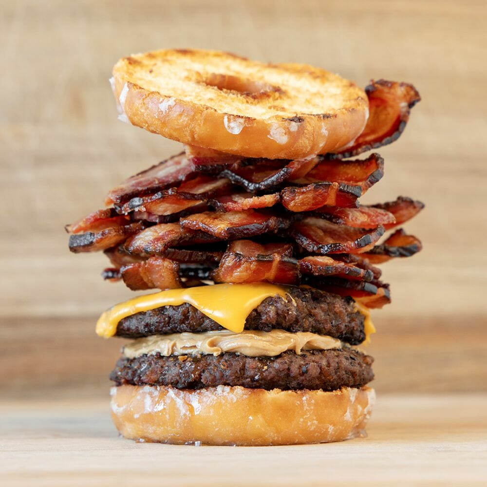

La Criminal de Dona Glaseada - Luther Burger

Esta hamburguesa es un atentado que nació en Georgia y destaca por su combinación absurda y adictiva. No lleva pan, lleva dos donas Krispy Kreme glaseadas. En esta receta, la grasa de la carne de 250g se mezcla con el azúcar derretido de la dona, el queso cheddar y 5 tiras de tocino, creando una bomba de azúcar y grasa que tu cerebro ama y tu corazón odia. Además, es tan pegajosa y jugosa que necesitas comerla con 10 servilletas y cero vergüenza.